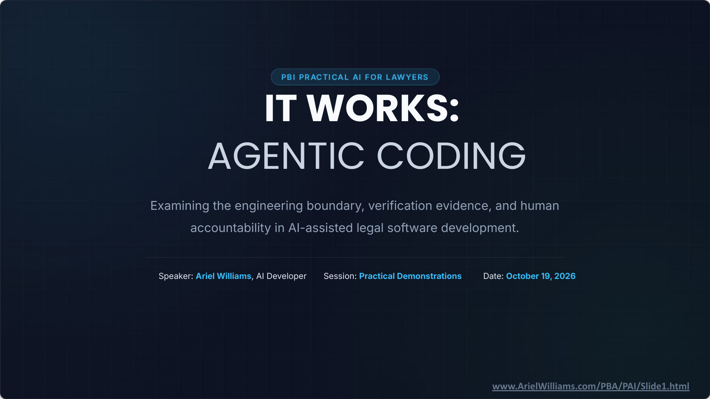

It Works: Agentic Coding and Legal Technology · Slide 1 of 12
IT WORKS: AGENTIC CODING
Slide snapshot captured · Ariel Williams

Slide 1 of 12 · Fixed snapshot of the original presentation. The text transcript follows.
Text transcript
Presentation series
PBI PRACTICAL AI FOR LAWYERS
Examining the engineering boundary, verification evidence, and human accountability in AI-assisted legal software development.
Speaker: Ariel Williams, AI Developer
Session: Practical Demonstrations
Date: October 19, 2026
Slide footer: www.ArielWilliams.com/PBA/PAI/Slide1.html